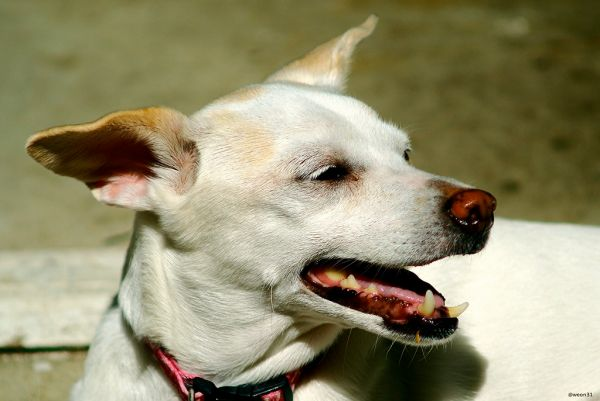

บทความความรู้สัตว์เลี้ยง 🐾
เกร็ดความรู้ดูแลน้องหมาน้องแมว จากทีม Perfect Pet House — อัปเดตทุกวัน
📅 5 กรกฎาคม 2569
8 อาหารอันตรายถึงชีวิต ที่ห้ามให้น้องหมากินเด็ดขาด
ของกินบางอย่างที่คนกินได้สบายๆ กลับเป็นพิษร้ายแรงต่อน้องหมา บางชนิดแค่คำเดียวก็อันตราย รวมลิสต์อาหารต้องห้ามและอาการที่ต้องรีบพาไปหาหมอ
อ่านต่อ →
📅 4 กรกฎาคม 2569
หน้าฝนนี้ระวัง! 5 ปัญหาสุขภาพน้องหมาที่มากับความชื้น และวิธีดูแล
ฝนตกทีไร น้องหมาเริ่มเกา มีกลิ่นตัว ขนแฉะ? ความชื้นหน้าฝนคือตัวการของหลายปัญหาผิวหนัง รวมวิธีดูแลและสัญญาณอันตรายที่ต้องรีบพาไปหาหมอ
อ่านต่อ →
📅 3 กรกฎาคม 2569
ฝากเลี้ยงน้องหมาครั้งแรก เตรียมตัวยังไงให้น้องไม่เครียด (คู่มือฉบับเจ้าของมือใหม่)
จะไปเที่ยวหรือติดธุระ แต่กังวลว่าน้องหมาจะเครียดตอนฝากเลี้ยง? รวมเทคนิคเตรียมตัวจากแหล่งข้อมูลสัตวแพทย์ ตั้งแต่สัญญาณความเครียดไปจนถึงวัคซีนที่ต้องพร้อม
อ่านต่อ →